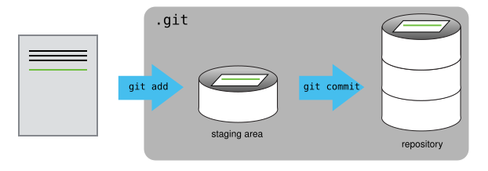

Version Control with Git and GitHub for Hackathon Projects
From Theory to Collaborative Practice
2026-07-01
What We’ll Cover (Half‑Day Agenda)
- Theory – What is version control? Why do we need it?
- Local Git – The basic commands (
init,add,commit,status,diff,log,restore) - Remote & GitHub – Connecting, pushing, pulling, SSH
- Collaboration – Branches, pull requests, resolving conflicts
- Environment Management with
uv– Why and how to use it - CCDS Repository Style – Structure your project for clarity and reproducibility
- Best Practices – Commit messages,
.gitignore, automation with GitHub Actions
Each theory block is followed by hands‑on exercises to reinforce learning.
The Problem with Manual Version Control
We’ve all been here:

- Multiple nearly‑identical versions of the same document.
- No clear record of who changed what and when.
- Collaborating is painful – emailing files back and forth.
- Risk of losing good work or mixing up changes.
Version control systems (VCS) were built to solve these problems.
What is a Version Control System?
- A VCS tracks changes to files over time.
- It allows you to:
- Recover earlier versions.
- See who made each change and why (with commit messages).
- Work on different features simultaneously (branches).
- Merge changes from multiple contributors.
- Distributed vs. Centralised:
- Older systems (CVS, SVN) used a central server – a single point of failure.
- Git is distributed: every developer has the full history locally.
Git was created by Linus Torvalds in 2005 to manage the Linux kernel development.
How Git Works (The Theory)
- Repository (repo): The
.gitfolder that stores all history and metadata. - Working tree: The files you are currently editing.
- Staging area (index): A temporary holding area for changes you want to commit.
- Commit: A snapshot of the entire project at a point in time.
- Each commit has a unique hash (e.g.,
f22b25e). - Commits are linked in a chain – each knows its parent.
- Each commit has a unique hash (e.g.,
- Branch: A movable pointer to a commit. The default branch is usually
main. - HEAD: A pointer to the current branch/commit.

Git Data Model
The Three States of a File
Git files can be in one of three states:
- Modified – You have changed the file but not yet staged it.
- Staged – You have marked the file to be included in the next commit.
- Committed – The file is safely stored in the repository.
The basic workflow: - Edit files → modified. - git add → staged. - git commit → committed.
Understanding these states is key to using Git effectively.
Setting Up Git (First‑Time Configuration)
Configure your identity (do this once per machine):
Check your settings:
Use the same email as your GitHub account.
Getting Help
Git has built‑in help:
Creating a Repository and Your First Commit
Start a new project:
Create a file and commit it:
git status is your best friend – use it often.
The Modify‑Commit Cycle
- Edit a file.
- Stage the changes:
git add <file>. - Commit with a message:
git commit -m "explanation".
View the commit history:
See what changed (before staging):
Discard unstaged changes (be careful!):
Unstage a file (keep changes):
Remote Repositories and GitHub
- A remote is a copy of the repository hosted elsewhere (e.g., on GitHub).
- You can synchronise your local repo with the remote.
Create a new empty repository on GitHub (do not add a README, .gitignore, or license – we already have one locally).
Link your local repo to the remote:
Push your work:
The -u sets the upstream, so later you can just use git push.
Authentication with SSH (Secure & Convenient)
- SSH uses a key pair (public + private) to authenticate without passwords.
- Generate a key pair (if you don’t have one):
- Copy the public key:
Add it to GitHub: Settings → SSH and GPG keys → New SSH key.
Test the connection:
Now use the SSH URL (e.g., git@github.com:user/repo.git) when cloning or adding remotes.
Cloning an Existing Repository
To get a copy of an existing repository (e.g., your teammate’s project):
This automatically sets up origin and checks out the default branch.
Basic Collaboration: Pull and Push
The daily workflow when working with a team:
- Before you start:
git pull origin main– get the latest changes from the remote. - Make your changes, stage, and commit locally.
- Share your work:
git push origin main
Always pull before you push to avoid unnecessary merge conflicts.
Branching: The Foundation of Collaboration
- A branch is an independent line of development.
- The default branch is usually
main(ormaster). - Use branches to:
- Develop a new feature or experiment.
- Isolate work from the stable code.
- Keep
mainalways deployable.
Create and switch to a new branch:
Push the branch to GitHub:
Pull Requests (PRs) – The Heart of Code Review
- A PR is a request to merge changes from one branch into another (usually into
main). - On GitHub, you open a PR after pushing your branch.
- Team members can review, comment, and suggest changes.
- Once approved, the PR is merged.
Why PRs? - Quality control – catch bugs before they hit main. - Documentation – the PR discussion explains the reasoning. - Shared ownership – everyone sees what’s changing.
Handling Merge Conflicts
Conflicts occur when two people modify the same lines of the same file.
When you git pull, Git will warn you about conflicts.
Open the file; Git marks the conflicting sections:
<<<<<<< HEAD
your changes
=======
their changes
>>>>>>> branch-nameManually edit to keep the correct version, remove the markers, then:
Conflicts are normal. The key is to communicate with your team.
Why Environment Management Matters (The Theory)
- Every Python project depends on libraries with specific versions.
- Without a lock, different machines (or even the same machine later) might get different packages, leading to “it works on my machine” problems.
- A consistent environment ensures reproducibility – vital for hackathon projects where you need to share results quickly.
Introducing uv – Fast, Modern Python Environment Manager
uvis a lightning‑fast package installer and resolver, written in Rust.- It replaces
pipandvenvwith a single, unified tool. - Key benefits:
- Speed: much faster than pip.
- Locking: creates a
uv.lockfile that pins exact versions. - Project‑centric: manages dependencies declared in
pyproject.toml. - Global cache: avoids re‑downloading packages.
Install uv:
Setting Up a Project with uv
Initialise a new project:
This creates: - pyproject.toml – project metadata and dependencies. - README.md. - A src/ folder (optional) for your package.
Add dependencies:
Create and sync the virtual environment:
Activate the environment:
- Linux/macOS:
source .venv/bin/activate - Windows:
.venv\Scripts\activate
The
.venvfolder is created; do not commit it to Git.
The uv.lock File
uv.lockcontains the exact versions of all dependencies and sub‑dependencies.- Commit
uv.lockto your repository. - When a teammate clones the repo and runs
uv sync, they get the exact same environment. - This is the foundation of reproducible data science.
CCDS Repository Style (The Why)
A well‑organised project helps everyone navigate and contribute.
Recommended structure (adapted from CCDS guidelines):
project/
├── README.md # Overview, setup, and usage
├── .gitignore # Ignore files (see next slide)
├── pyproject.toml # Dependencies (uv)
├── uv.lock # Lock file
├── .python-version # Python version (optional)
├── src/
│ └── project/ # Reusable Python modules
│ ├── __init__.py
│ └── core.py
├── notebooks/ # Jupyter/Quarto notebooks
├── data/ # Data (add to .gitignore if large)
├── tests/ # Unit tests
└── scripts/ # Utility scriptsKeep the root clean; use meaningful names.
.gitignore – What Not to Commit
A good .gitignore prevents clutter and security leaks.
Minimal example for Python:
# Python cache
__pycache__/
*.pyc
*.pyo
*.pyd
# Virtual environments
.venv/
venv/
env/
# Jupyter notebooks (if you don't want outputs)
.ipynb_checkpoints/
*.ipynb # or strip outputs with nbdime
# Large data files
*.csv
*.nc
*.h5
*.pkl
# IDE
.vscode/
.idea/
*.swp
.DS_StoreAdd patterns that match your project’s files.
Challenge: Set Up a Complete Project
Task: Create a new Git repository, initialise it with uv, add a dependency, and push to GitHub.
- Create a directory and
git init. uv initanduv add pandas.- Create a
notebooks/folder and an empty.gitkeep(to track the folder). - Add a
.gitignorewith Python anduv‑specific entries. - Commit everything and push to a new GitHub repository.
Solution snippet
mkdir my_hack && cd my_hack
git init
uv init
uv add pandas
mkdir notebooks
touch notebooks/.gitkeep
echo ".venv/" > .gitignore
echo "__pycache__/" >> .gitignore
git add .
git commit -m "Initial project setup with uv"
# Create repo on GitHub, then:
git remote add origin git@github.com:user/my_hack.git
git push -u origin mainContinuous Integration with GitHub Actions (Bonus)
Automate testing and linting on every push.
Create .github/workflows/ci.yml:
This ensures your code works in a fresh environment.
Summary: The Big Picture
- Git = track changes, collaborate, experiment safely.
- GitHub = remote hosting, PRs, code review.
- Branches = isolate work, merge via PRs.
uv= fast, reproducible Python environments.- CCDS structure = clarity and reproducibility.
A hackathon is about building something quickly – these tools help you build reliably with a team.
Resources
- Pro Git Book – comprehensive reference.
- GitHub Skills – interactive tutorials.
- uv Documentation – official guide.
- [CCDS Internal Style Guide] – your organisation’s standards.
Thank You!
Happy Hacking!
🤝
References
- Pro Git Book: https://git-scm.com/book
- GitHub Skills: https://skills.github.com
- uv Documentation: https://docs.astral.sh/uv/
CCDS | Hackathon